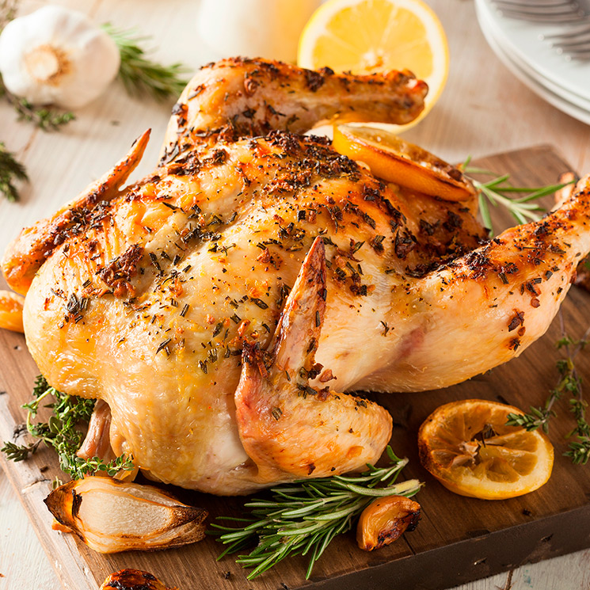

Rosemary Chicken
This chicken taste like shit, but fuck it
Ingredients
- 4 teaspoons garlic powder
- 4 skinless, boneless chicken breast halves
- salt and pepper to taste
- 4 sprigs fresh rosemary
- 4 thick slices bacon
Steps
- Preheat an outdoor grill for medium-high heat, and lightly oil the grate.
- Sprinkle 1 teaspoon garlic powder on a chicken breast and season with salt and pepper. Lay one rosemary sprig on the chicken breast. Wrap the bacon around the chicken to hold the rosemary on. Secure the bacon with a toothpick or an additional thick rosemary stem.
- Cook the chicken breasts until no longer pink in the center and the juices run clear, 8 minutes per side. An instant-read thermometer inserted into the center should read at least 165 degrees F (74 degrees C). Stay near the grill to combat any flare ups from the bacon. Remove the toothpicks before serving.